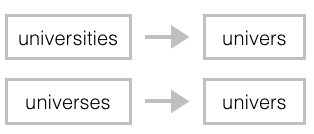
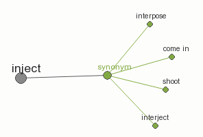

ACM's Technology
ACM is all about using the best of search engine techniques. Search is already integral to our lives, so ACM seeks to apply these techniques in a way that can help us analyse how to pursue that dream job better.
Vector Space Model

The core of ACM search technologies lies in the application of Vector Space Model (VSM). ACM indexed and store with itself the huge collection of important documents that have the definition of skills at corresponding level from different framework. What follows next is simply the iteration of the user inputted knowledge and skill (competencies) descriptions as queries to ACM to return the document containing information that is essentially the most similar to the query.
VSM is integral in comparing the similarities of CVs and job descriptions, enabling ACM to compare and evaluate the capabilities of candidates and profile them accordingly
Accuracy Improvement
Stemming |
Synonym Injection |
Prioritizing Terms |
|---|---|---|
|  |  | |
ACM applies the technique of stemming that reduces a word of multiple forms to its root form |
|
The developers of ACM took extra effort to sift through the information and give extra weight and priority to important terms and expression |
To Infinity and Beyond
Here with ACM, we understand the need for the results to be accurate which probably affects the efficiency of the application. ACM had been analyzed and tested with many people in different environment and the results proved to be realistic and accurate to them. ACM has been infused with the creative combination of the different search engine techniques and is now trusted by many companies and countries. Still, ACM believes in continuous improvement and innovation, and will not stop to seek the new possibilities in technology to bring the accuracy of ACM to perfection.